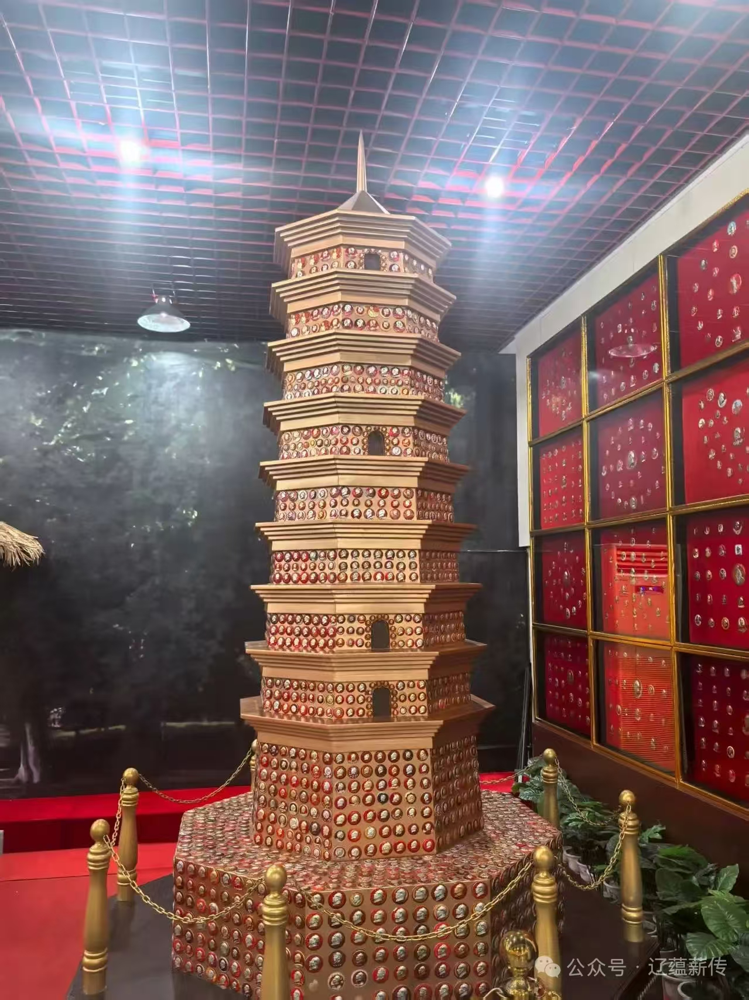

大连金石滩毛泽东历史珍藏馆，于2001年12月26日，即毛泽东诞辰108周年之际正式开馆。旨在纪念毛泽东同志，展示与毛泽东相关的历史文化，为人们提供一个了解中国革命历史和毛泽东生平的重要场所。
馆内设有毛泽东历史陈列馆和毛泽东像章陈列馆两个分馆。其中，陈列馆又设韶山骄子、星火燎原、建国伟业、新中国建设、毛泽东家族史、永久珍藏和影视区九个展区。
位于展馆二楼的毛泽东像章陈列馆，是迄今为止国内外毛泽东主席像章陈列规模最大、数量最多和种类最全的展览馆。大部分像章由“中国红色收藏第一人”陈德先生捐赠。
像章按历史阶段顺序布列：从1893年毛泽东韶山诞辰到井冈山革命根据地，从两万五千里长征到延安红色政权，从开国大典到抗美援朝，再从十年动乱到后来的百年诞辰。
像章的种类分为章、套章、专题章、系列章，固定在红色天鹅绒布上，外框则辅以高贵的红松木板材。展厅布置独具匠心，既宏伟壮观，高雅含蓄，又具有强的视觉冲击力。
 ← 返回大连地图